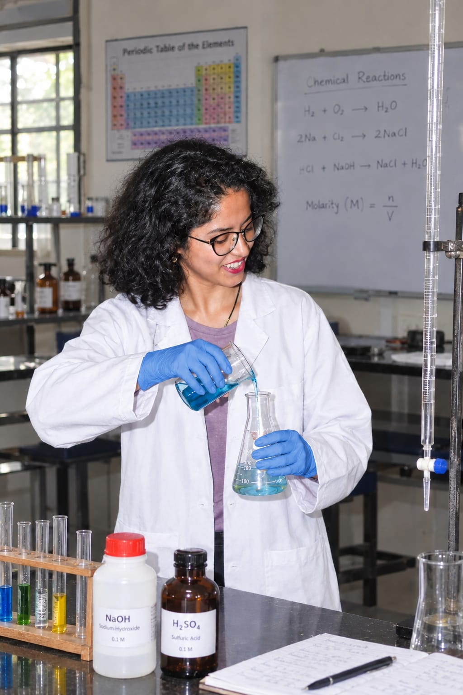
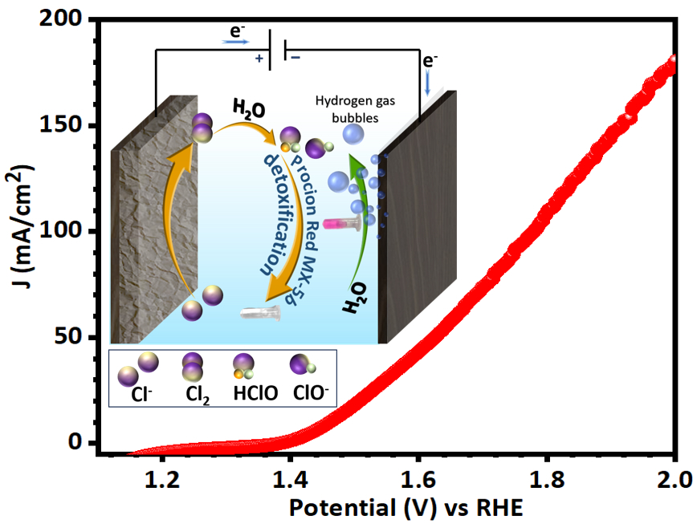

01ϟ
Electrochemical energy
Electrocatalytic oxidation and evolution reactions, including ethanol oxidation, urea oxidation, chlorine evolution and water electrolysis.
↗Hello, I'm
Exploring the intersection of materials chemistry, nanotechnology, electrochemistry and sustainable energy — designing functional nanostructures, understanding their electrochemical behaviour, and transforming underutilised resources into innovative materials for a cleaner, more sustainable future.

Curiosity-led research for a cleaner, more sustainable energy future.
“Connecting the atomic-scale design of nanostructured catalysts with scalable, sustainable solutions for clean energy conversion and environmental remediation.
— Research Mission
I am a materials scientist with a PhD in Materials Science from Panjab University, Chandigarh, carried out in collaboration with the Institute of Nano Science and Technology (INST), Mohali.
My research focuses on the rational design of complex metal oxide nanostructures — particularly perovskites — for electrochemical energy applications. I work across ethanol and urea oxidation, chlorine and oxygen evolution, water electrolysis, and the upcycling of industrial waste into functional materials.
I am motivated by connecting fundamental materials chemistry with practical innovations that address energy conversion challenges and environmental protection.
Explore my academic journey ↗
Ph.D. in Materials Science
BS–MS Integrated Chemistry
Visiting Scholar (Germany) & Exchange (S. Korea)
Research themes connecting nanostructure design to global energy and environmental challenges.
Electrocatalytic oxidation and evolution reactions, including ethanol oxidation, urea oxidation, chlorine evolution and water electrolysis.
↗Design, synthesis and stabilisation of complex metal oxide nanostructures, with a focus on composition–structure–property relationships.
↗Recovering useful elements from industrial residues and spent materials to create functional nanostructures for catalytic applications.
↗Developing catalyst materials that can contribute to more efficient energy conversion and cleaner hydrogen-related technologies.
↗Understanding active sites, reaction pathways and structure-dependent catalytic behaviour in complex oxide materials.
↗Structurally Engineered Perovskites Based Complex Metal Oxide Nanostructures for Energy Related Applications.
Explore related work ↗Consolidated scholarly record: peer-reviewed journal papers, book chapters, patent and manuscripts with direct DOI and citation export.
A process for producing La₂FeMnO₆ (LFMO) from iron ore slime and applications thereof.
A research translation pathway that transforms iron ore slime, an industrial by-product, into a functional complex metal oxide for energy-related applications.
Santanu Sarkar, Supriya Sarkar, Menaka Jha, Sujit Guchhait, Kritika Sood, Ankush and Krishna Yadav.
Research appointments, academic milestones and scientific trajectory.
From early laboratory immersion at national laboratories to doctoral milestones in sustainable energy materials.
CSIR–National Physical Laboratory, New Delhi
First research immersionInstitute of Nano Science and Technology, Mohali
Materials synthesis beginsINST Mohali · Panjab University
Complex metal oxidesINST Mohali · Panjab University
Electrocatalysis & energyPanjab University, Chandigarh & INST Mohali
Perovskites for energy applicationsFellowships, research distinctions, and international academic honors.
Invited as a visiting scholar at Ruhr University Bochum, conducting international research on electrochemical interfaces.
Recognised for best scientific presentation at the prestigious international conference hosted at NIT Srinagar.
Competitive doctoral fellowship awarded by the Department of Science and Technology (DST), Government of India.
National fellowship hosted at CSIR–National Physical Laboratory, New Delhi, focusing on advanced materials.
Selected as an international exchange fellow at the University of Suwon, experiencing Korean research innovation.
Scientific presentations and engagement with the materials science community across premier national & international platforms.
◈ National Institute of Technology, Calicut
◈ IIT (BHU), Varanasi
◈ Goa University
◈ IIT Guwahati
◈ NIT Srinagar
◈ VIT, Chennai
Methodological groupings spanning nanomaterial synthesis, surface characterisation, electrochemistry and computational tools.
Open to meaningful research conversations, academic collaborations, postdoctoral opportunities and inquiries at the intersection of materials science, electrochemistry and sustainable energy.